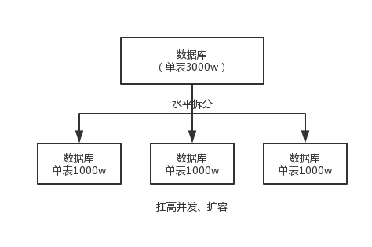
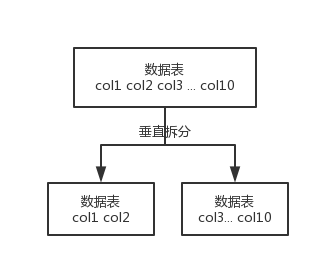

为什么要分库分表（设计高并发系统的时候，数据库层面该如何设计）？用过哪些分库分表中间件？不同的分库分表中间件都有什么优点和缺点？你们具体是如何对数据库如何进行垂直拆分或水平拆分的？
其实这块肯定是扯到高并发了，因为分库分表一定是为了支撑高并发、数据量大两个问题的。而且现在说实话，尤其是互联网类的公司面试，基本上都会来这么一下，分库分表如此普遍的技术问题，不问实在是不行，而如果你不知道那也实在是说不过去！
说白了，分库分表是两回事儿，大家可别搞混了，可能是光分库不分表，也可能是光分表不分库，都有可能。
我先给大家抛出来一个场景。
假如我们现在是一个小创业公司（或者是一个 BAT 公司刚兴起的一个新部门），现在注册用户就 20 万，每天活跃用户就 1 万，每天单表数据量就 1000，然后高峰期每秒钟并发请求最多就 10。天，就这种系统，随便找一个有几年工作经验的，然后带几个刚培训出来的，随便干干都可以。
结果没想到我们运气居然这么好，碰上个 CEO 带着我们走上了康庄大道，业务发展迅猛，过了几个月，注册用户数达到了 2000 万！每天活跃用户数 100 万！每天单表数据量 10 万条！高峰期每秒最大请求达到 1000！同时公司还顺带着融资了两轮，进账了几个亿人民币啊！公司估值达到了惊人的几亿美金！这是小独角兽的节奏！
好吧，没事，现在大家感觉压力已经有点大了，为啥呢？因为每天多 10 万条数据，一个月就多 300 万条数据，现在咱们单表已经几百万数据了，马上就破千万了。但是勉强还能撑着。高峰期请求现在是 1000，咱们线上部署了几台机器，负载均衡搞了一下，数据库撑 1000QPS 也还凑合。但是大家现在开始感觉有点担心了，接下来咋整呢......
再接下来几个月，我的天，CEO 太牛逼了，公司用户数已经达到 1 亿，公司继续融资几十亿人民币啊！公司估值达到了惊人的几十亿美金，成为了国内今年最牛逼的明星创业公司！天，我们太幸运了。
但是我们同时也是不幸的，因为此时每天活跃用户数上千万，每天单表新增数据多达 50 万，目前一个表总数据量都已经达到了两三千万了！扛不住啊！数据库磁盘容量不断消耗掉！高峰期并发达到惊人的 5000~8000！别开玩笑了，哥。我跟你保证，你的系统支撑不到现在，已经挂掉了！
好吧，所以你看到这里差不多就理解分库分表是怎么回事儿了，实际上这是跟着你的公司业务发展走的，你公司业务发展越好，用户就越多，数据量越大，请求量越大，那你单个数据库一定扛不住。
比如你单表都几千万数据了，你确定你能扛住么？绝对不行，单表数据量太大，会极大影响你的 sql 执行的性能，到了后面你的 sql 可能就跑的很慢了。一般来说，就以我的经验来看，单表到几百万的时候，性能就会相对差一些了，你就得分表了。
分表是啥意思？就是把一个表的数据放到多个表中，然后查询的时候你就查一个表。比如按照用户 id 来分表，将一个用户的数据就放在一个表中。然后操作的时候你对一个用户就操作那个表就好了。这样可以控制每个表的数据量在可控的范围内，比如每个表就固定在 200 万以内。
分库是啥意思？就是你一个库一般我们经验而言，最多支撑到并发 2000，一定要扩容了，而且一个健康的单库并发值你最好保持在每秒 1000 左右，不要太大。那么你可以将一个库的数据拆分到多个库中，访问的时候就访问一个库好了。
这就是所谓的分库分表，为啥要分库分表？你明白了吧。
| # | 分库分表前 | 分库分表后 |
|---|---|---|
| 并发支撑情况 | MySQL 单机部署，扛不住高并发 | MySQL从单机到多机，能承受的并发增加了多倍 |
| 磁盘使用情况 | MySQL 单机磁盘容量几乎撑满 | 拆分为多个库，数据库服务器磁盘使用率大大降低 |
| SQL 执行性能 | 单表数据量太大，SQL 越跑越慢 | 单表数据量减少，SQL 执行效率明显提升 |
这个其实就是看看你了解哪些分库分表的中间件，各个中间件的优缺点是啥？然后你用过哪些分库分表的中间件。
比较常见的包括：
阿里 b2b 团队开发和开源的，属于 proxy 层方案，就是介于应用服务器和数据库服务器之间。应用程序通过 JDBC 驱动访问 Cobar 集群，Cobar 根据 SQL 和分库规则对 SQL 做分解，然后分发到 MySQL 集群不同的数据库实例上执行。早些年还可以用，但是最近几年都没更新了，基本没啥人用，差不多算是被抛弃的状态吧。而且不支持读写分离、存储过程、跨库 join 和分页等操作。
淘宝团队开发的，属于 client 层方案。支持基本的 crud 语法和读写分离，但不支持 join、多表查询等语法。目前使用的也不多，因为还依赖淘宝的 diamond 配置管理系统。
360 开源的，属于 proxy 层方案，以前是有一些公司在用的，但是确实有一个很大的问题就是社区最新的维护都在 5 年前了。所以，现在用的公司基本也很少了。
当当开源的，属于 client 层方案，目前已经更名为 ShardingSphere（后文所提到的 Sharding-jdbc，等同于 ShardingSphere）。确实之前用的还比较多一些，因为 SQL 语法支持也比较多，没有太多限制，而且截至 2019.4，已经推出到了 4.0.0-RC1 版本，支持分库分表、读写分离、分布式 id 生成、柔性事务（最大努力送达型事务、TCC 事务）。而且确实之前使用的公司会比较多一些（这个在官网有登记使用的公司，可以看到从 2017 年一直到现在，是有不少公司在用的），目前社区也还一直在开发和维护，还算是比较活跃，个人认为算是一个现在也可以选择的方案。
基于 Cobar 改造的，属于 proxy 层方案，支持的功能非常完善，而且目前应该是非常火的而且不断流行的数据库中间件，社区很活跃，也有一些公司开始在用了。但是确实相比于 Sharding jdbc 来说，年轻一些，经历的锤炼少一些。
综上，现在其实建议考量的，就是 Sharding-jdbc 和 Mycat，这两个都可以去考虑使用。
Sharding-jdbc 这种 client 层方案的优点在于不用部署，运维成本低，不需要代理层的二次转发请求，性能很高，但是如果遇到升级啥的需要各个系统都重新升级版本再发布，各个系统都需要耦合 Sharding-jdbc 的依赖；
Mycat 这种 proxy 层方案的缺点在于需要部署，自己运维一套中间件，运维成本高，但是好处在于对于各个项目是透明的，如果遇到升级之类的都是自己中间件那里搞就行了。
通常来说，这两个方案其实都可以选用，但是我个人建议中小型公司选用 Sharding-jdbc，client 层方案轻便，而且维护成本低，不需要额外增派人手，而且中小型公司系统复杂度会低一些，项目也没那么多；但是中大型公司最好还是选用 Mycat 这类 proxy 层方案，因为可能大公司系统和项目非常多，团队很大，人员充足，那么最好是专门弄个人来研究和维护 Mycat，然后大量项目直接透明使用即可。
水平拆分的意思，就是把一个表的数据给弄到多个库的多个表里去，但是每个库的表结构都一样，只不过每个库表放的数据是不同的，所有库表的数据加起来就是全部数据。水平拆分的意义，就是将数据均匀放更多的库里，然后用多个库来扛更高的并发，还有就是用多个库的存储容量来进行扩容。

垂直拆分的意思，就是把一个有很多字段的表给拆分成多个表，或者是多个库上去。每个库表的结构都不一样，每个库表都包含部分字段。一般来说，会将较少的访问频率很高的字段放到一个表里去，然后将较多的访问频率很低的字段放到另外一个表里去。因为数据库是有缓存的，你访问频率高的行字段越少，就可以在缓存里缓存更多的行，性能就越好。这个一般在表层面做的较多一些。

这个其实挺常见的，不一定我说，大家很多同学可能自己都做过，把一个大表拆开，订单表、订单支付表、订单商品表。
还有表层面的拆分，就是分表，将一个表变成 N 个表，就是让每个表的数据量控制在一定范围内，保证 SQL 的性能。否则单表数据量越大，SQL 性能就越差。一般是 200 万行左右，不要太多，但是也得看具体你怎么操作，也可能是 500 万，或者是 100 万。你的SQL越复杂，就最好让单表行数越少。
好了，无论分库还是分表，上面说的那些数据库中间件都是可以支持的。就是基本上那些中间件可以做到你分库分表之后，中间件可以根据你指定的某个字段值，比如说 userid，自动路由到对应的库上去，然后再自动路由到对应的表里去。
你就得考虑一下，你的项目里该如何分库分表？一般来说，垂直拆分，你可以在表层面来做，对一些字段特别多的表做一下拆分；水平拆分，你可以说是并发承载不了，或者是数据量太大，容量承载不了，你给拆了，按什么字段来拆，你自己想好；分表，你考虑一下，你如果哪怕是拆到每个库里去，并发和容量都 ok 了，但是每个库的表还是太大了，那么你就分表，将这个表分开，保证每个表的数据量并不是很大。
而且这儿还有两种分库分表的方式：
range 来分，好处在于说，扩容的时候很简单，因为你只要预备好，给每个月都准备一个库就可以了，到了一个新的月份的时候，自然而然，就会写新的库了；缺点，但是大部分的请求，都是访问最新的数据。实际生产用 range，要看场景。
hash 分发，好处在于说，可以平均分配每个库的数据量和请求压力；坏处在于说扩容起来比较麻烦，会有一个数据迁移的过程，之前的数据需要重新计算 hash 值重新分配到不同的库或表。